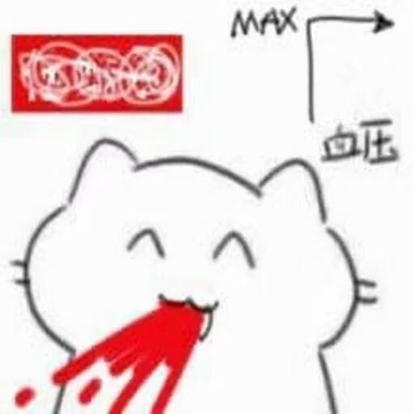

小白de排错教程
细心的朋友们可能发现了…博客用以前的域名打不开了，
那是因为猫猫经费不够了…域名过期了…= =
前言
我的一个朋友, The_Void, 创立了一个叫作CSTU的组织, 本篇文章是写给CSTU的伙伴们的

各位dalao们有兴趣也可以来凑凑热闹，目前组织小白居多:)
关于本文
介于不少小白害怕报错，本篇文章主要通过个人解决报错的实战案例来教小白们如何正确的面对报错

事件起因
咕咕咕了好久的猫猫准备开始继续coding…
VSCode启动!!!
终端启动!!!
Uvicorn启动!!!…????
Uvicorn 是什么?
—一种web服务器框架
诶????怎么启动不了了,之前还好好的?!!
$ uvicorn main:app --reload --host 0.0.0.0 --port 8000
Command 'uvicorn' not found
我明明用pip装过啊…
于是，就有了接下来一幕…

猫猫排错的经过
在吐槽过后…得解决问题啊
尝试自己解决问题
Hmmm,要不再装一下看看，难不成是python默认环境更新了?
python3 -m pip install -r requirements.txt
结果…全部环境都显示已安装…

卸了再装逝世看…?
$ pip uninstall uvicorn
Found existing installation: uvicorn 0.17.6
Not uninstalling uvicorn at /usr/lib/python3/dist-packages, outside environment /usr
Can't uninstall 'uvicorn'. No files were found to uninstall.
怪，太怪了…
遇事不决，ChatGPT
后来我又把所有报错全部贴给ChatGPT,
结果，兜兜转转好几回，GPT卡bug了…
找不到命令-->安装-->已经安装了-->GPT给我原来的运行命令->找不到命令-->安装...
你跟我这里搁这儿搁这儿卡循环是吧= =
尝试找更多细节
在我在其他目录跑这个命令的时候，发现Uvicorn命令是可用的…
Hmmm, 说不定查查这个能解决问题..?
继续向GPT请教
我告诉ChatGPT这个事情后, GPT说可能和python虚拟环境有关…

不过我并没有使用虚拟环境啊…
那问狗狗(Google)吧
这个时候，就该搜索引擎闪亮登场了…
猫猫向往常一样，决定用英语搜索…
用英文会得到更好的结果哦qwq
组织下语言
咳咳，划重点，搜索的内容是很重要的
现在整理下我们所拥有的信息
-
uvicorn找不到命令 -
uvicorn已经安装了 -
且
uvicorn无法卸载 -
只在项目文件夹里找不到命令
通过直觉想想，1,2和4更重要些
因为能不能卸对于解决问题貌似关联不大嘛…
浓缩一下，变成两组关键信息
uvicorn已经安装 只在项目文件夹内找不到命令
换成英文
uvicorn installed command not found only in project folder
进行搜索

直接点第一个结果~

问题解决
我怀揣着30%的兴奋, 30%的激动, 40%的紧张开始尝试
python3 -m uvicorn main:app --reload --host 0.0.0.0 --port 8000

YES!!! 排错成功!
其他排错TIP
-
不要害怕报错，有报错你反而更加知道哪里出错了，比没有报错会容易解决很多~
-
建议排错步骤顺序：
-
自己解决
-
尝试推测错误产生的原因
-
用英文谷歌下
-
问AI
-
实在不行向大佬求助
-
这个问题以我目前的能力无法解决，先放下继续学习吧喵~
-